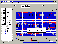

|
|
| 当前位置：电脑报电子版 > 1999 年 > 49 期 > 软件世界 > 网络磁盘整理工具——PerfectDisk 2000 |
| 《 网络磁盘整理工具——PerfectDisk 2000 》 |
| PerfectDisk原来是一款Windows NT系统下的磁盘碎片整理工具，由于Windows NT中没有磁盘碎片整理工具，因此PerfectDisk作为NT的一个补充工具，得到很多人的喜爱。现在PerfectDisk 2000不但可以在NT系统中进行磁盘碎片整理工作，也可以在Windows 98和Windows 95 OSR2版中工作，该磁盘整理工具最突出的特点，就是可以通过局域网整理网上其他计算机的硬盘。 如果要下载PerfectDisk 2000试用版，可以访问它的主页http:∥wwwraxcocom。也可以到国内的软件下载站点（http:∥wwwnewhuacom/perfectdisk2000htm）下载。下载文件大小为4MB。 PerfectDisk 2000的安装简单，安装中按照默认设置即可。安装完成后，需要重新启动系统。然后点击PerfectDisk 2000在桌面上建立的快捷方式，即可启动程序。 PerfectDisk 2000在启动过程中，将自动分析系统所在的局域网络，然后在程序界面的左面列出了网络结构（如图），如果要整理网络中某台电脑的磁盘，可以在其中选择某个电脑，用鼠标点击电脑名称前的图标，程序即列出该电脑的硬盘分区，你要整理某个分区，就在列表中选择某个硬盘分区。如果要同时整理所有的分区，就选择“All Partitions”（所有分区）。下面，就介绍PerfectDisk 2000的主要操作： 分析硬盘分区：选择某个要分析的硬盘分区，然后点击工具栏中的第一个按钮，程序即开始分析该分区的情况，并图示在界面的右面，另外，还专门弹出了一个详细的磁盘分析报告窗口，在这个窗口中有多个标签，报告的项目也非常详细，例如，在“File”标签中可以看到该分区的文件分布情况。选择标签下面的“Print”，还可以打印出报告。 整理磁盘：选择某个要整理的硬盘分区，然后点击工具栏中的第二个按钮，程序即开始整理硬盘分区。 快速扫描磁盘：选择某个硬盘分区，然后选择菜单“Defragment/Quick Scan”，程序即开始快速扫描该硬盘分区，请给出简约的报告，并询问是否开始进行磁盘整理，点击“Yes”即可开始。 定时整理磁盘：大家都知道，硬盘整理非常消耗时间，但对于有些硬盘读写频繁的系统，又必须经常整理硬盘，这时候，就可以使用PerfectDisk 2000的定制任务功能，专门对某些文件进行碎片整理，设置方法是在“Schedule”菜单中选择“Creat Profile”，打开窗口右“Profile”栏中输入一个任务名称，然后在窗口的右面选择要整理的文件。 自动整理磁盘：选择菜单“Schedule/Schedule Profile”，可在弹出的窗口中设置程序自动进行磁盘整理工作。 (山西 李小斌) |
| 下载本期推荐软件 | 页 首 |
| CPCW网站版权所有，电脑报网站编辑部设计制作发布 |